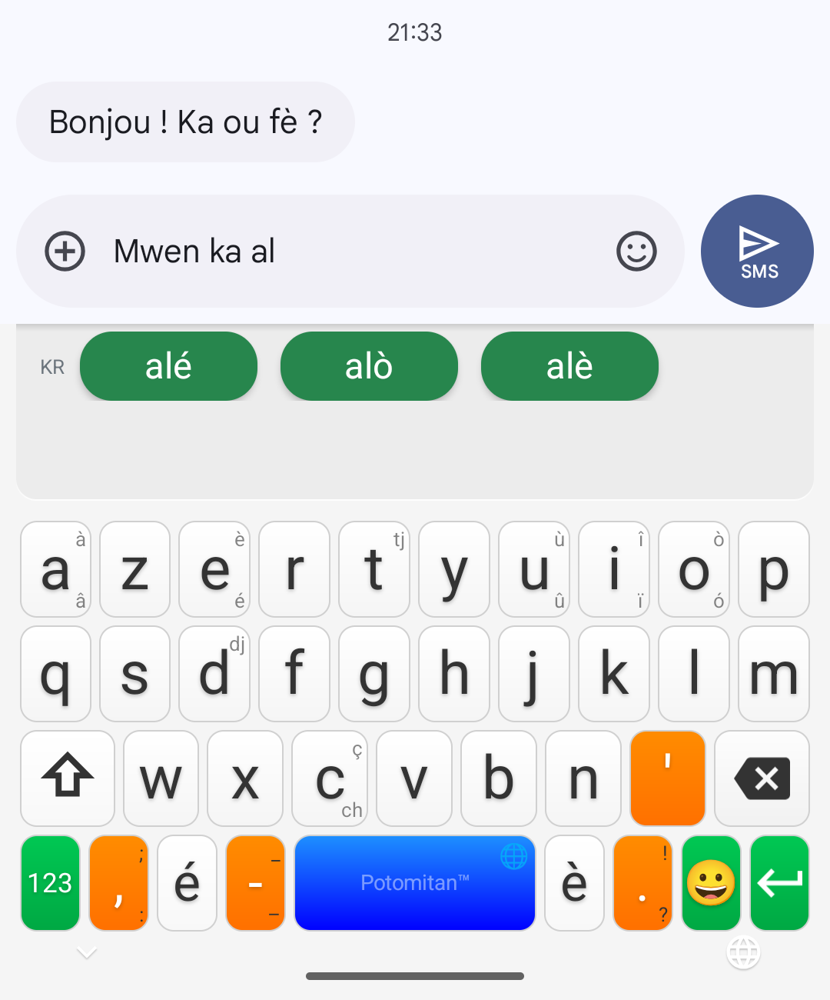

Osez le Kréyòl.
Écrivez votre kréyòl comme vous le parlez, sans qu'il soit corrigé en français.
Les mots en kréyòl et en français
Les accents par appui long
Écrivez votre kréyòl comme vous le parlez, sans qu'il soit corrigé en français.
Open source · Zéro publicité · 100 % hors ligne · Potomitan™
